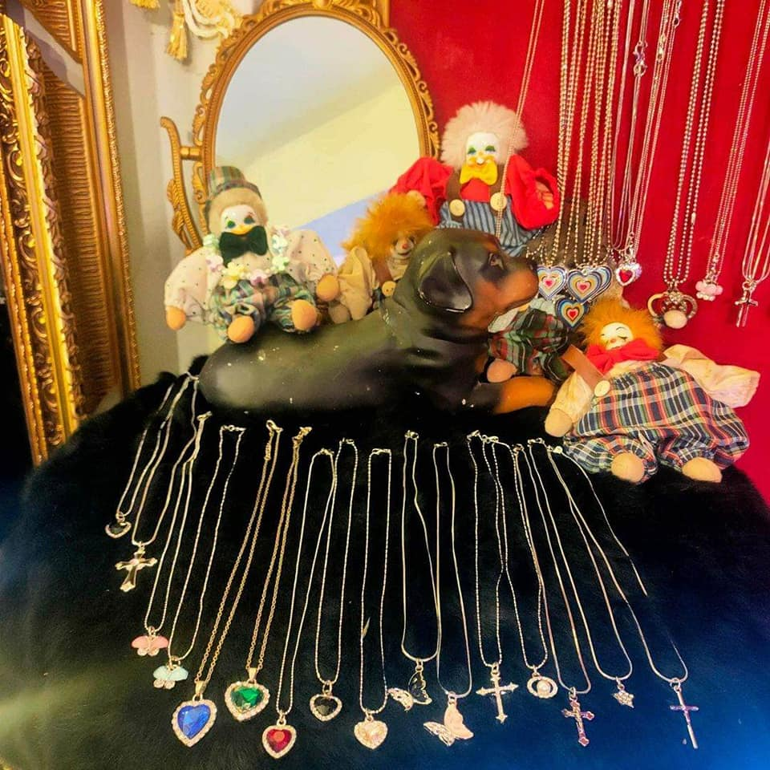
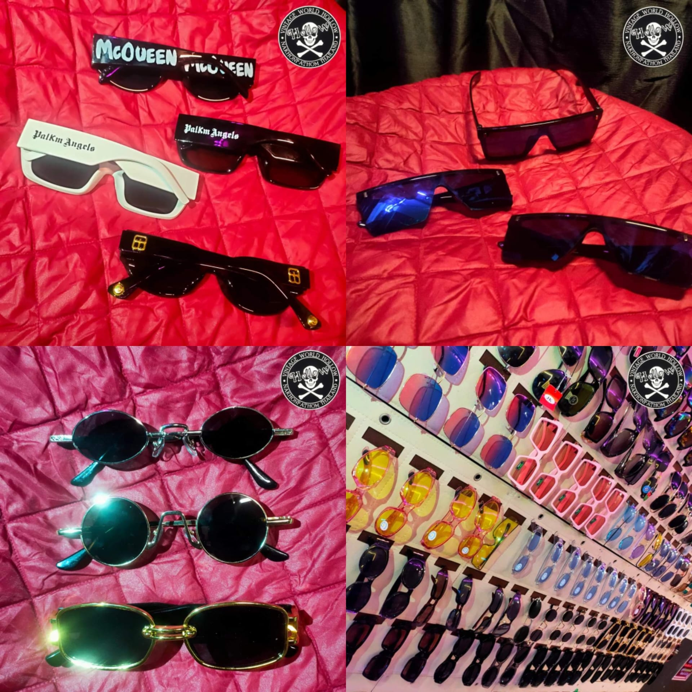
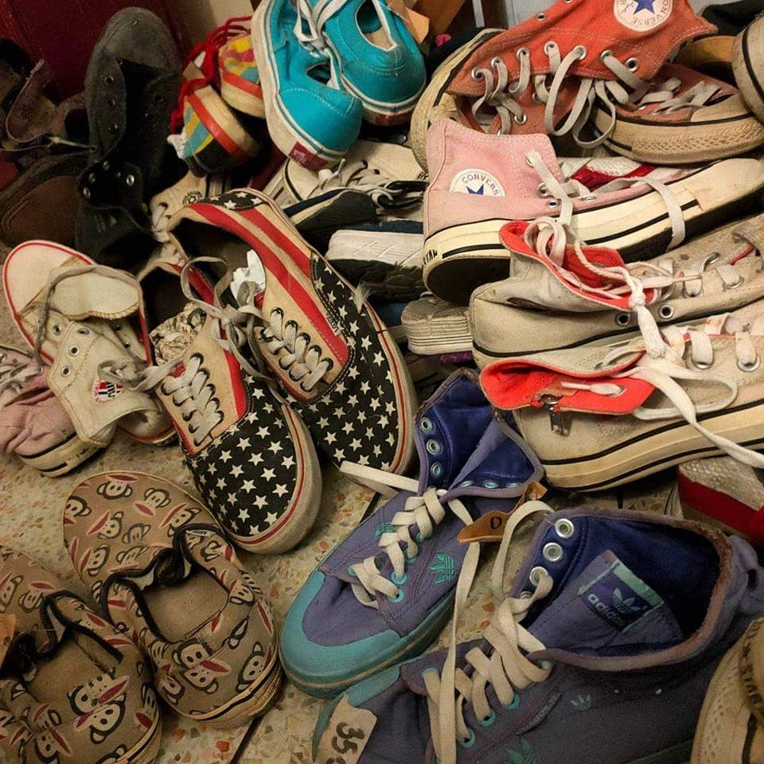
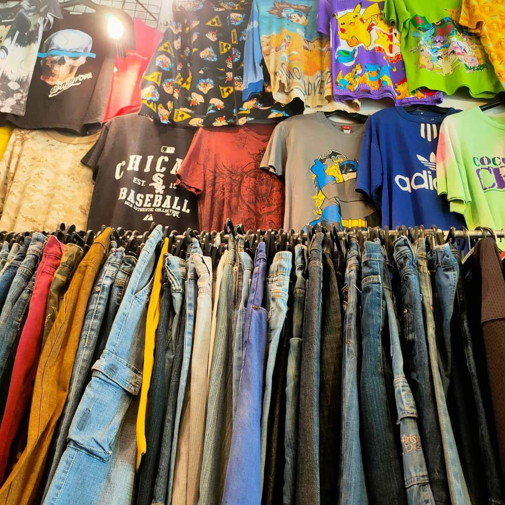
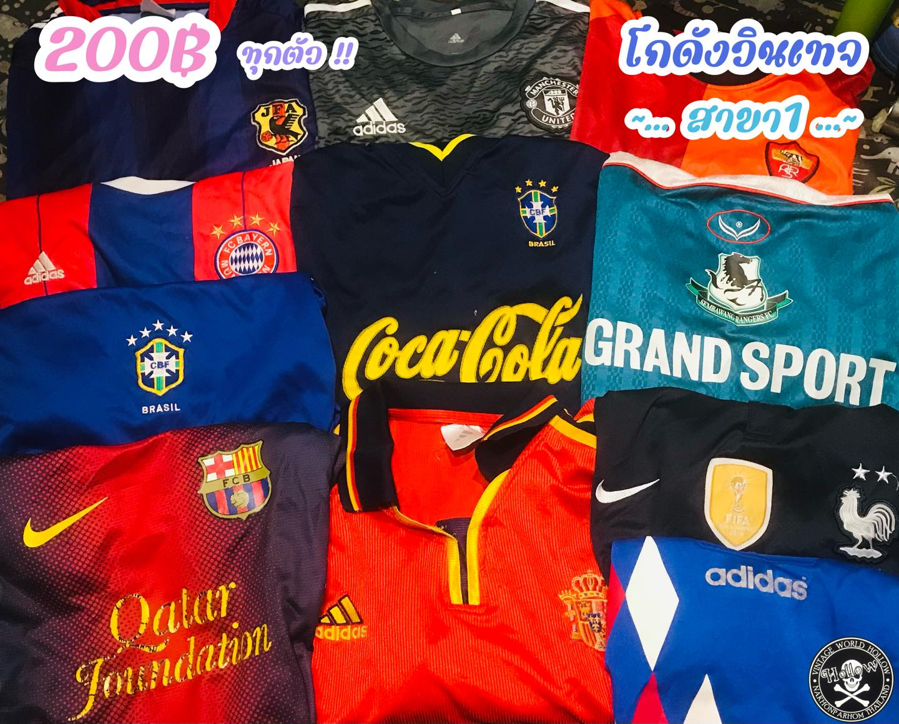
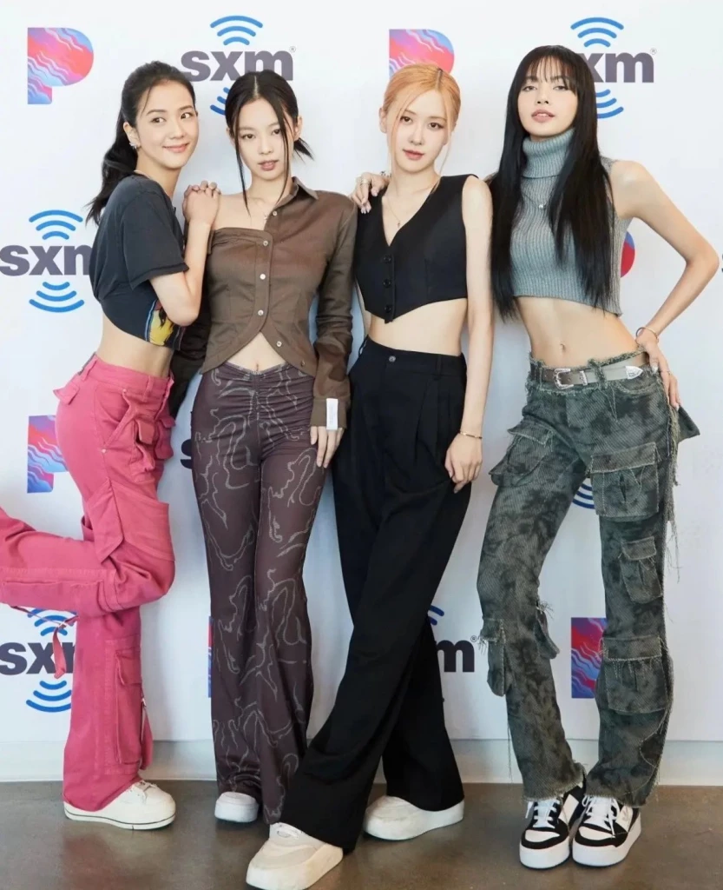

Y2K Style เป็นเทรนด์แฟชั่นที่กำลังมาแรงในปี 2022 มาจนถึง โดยการนำแฟชั่นที่ผู้คนนิยมใส่กันในยุค 2000 มาแมทซ์ให้ได้ลุคสุดคูล วันนี้ทีมงาน voidmain มาป้ายยา ร้านเสื้อผ้าวินเทจมือสองแถวม.ศิลปากร วิทยาเขตสนามจันทร์ ให้เพื่อนๆได้แมทซ์ลุค Y2K กันให้ปังปุริเย่ มาให้เพื่อนๆได้เลือกซื้อกัน พร้อมจะเป็นตัวแม่ตัวมัมของแก๊งรึยัง? ถ้าพร้อมแล้ว ไปกันเลย!
พิกัดจิ้มปุ่มด่านล่างนี้เลยยยย

สำหรับสายแฟชั่น y2k สิ่งที่ขาดไม่ได้เลยก็คือเครื่องประดับที่จะทำให้การแต่งตัวสนุกและดูมีอะไรมากขึ้นนั่นเอง ที่ร้านนี้ก็มีเครื่องประดับให้เพื่อนๆได้เลือกดูกันแบบจุใจ ไม่ว่าจะเป็นสร้อย สร้อยข้อมือ หรือแว่นตาเท่ๆ

ต่อมาสิ่งที่เป็นหัวใจหลักของการแต่งตัวก็คือ เสื้อผ้านั่นเอง แน่นอนว่าร้านนี้จะไม่ทำให้เพื่อนๆผิดหวังอย่างแน่นอน เพราะทางร้านมีทั้งเสื้อ กางเกง หมวก รองเท้า ให้เพื่อนๆได้แมทซ์กันอย่างจุใจ ไม่ว่าจะเป็นเสื้อยืดวินเทจ เสื้อบอลปีเก่า รองเท้าสุดคูล กางเกงคาร์โก้สุดชิค กางเกงยีนส์สุดเท่ หมวกสุดสวยหลายใบ รับรองได้ว่าเพื่อนๆมีเสื้อผ้าให้แมทซ์กันทุกวันเลยทีเดียวเชียวล่ะ!!!



เป็นยังไงกันบ้างทุกคนกับร้านเสื้อผ้ามือสองสไตล์ Y2K ที่ทางทีมงาน voidmain นำมาอัปเดตให้ดูกัน ใครที่เบื่อๆไม่รู้จะแต่งตัวอะไรดี สามารถมาเลือกซื้อเสื้อผ้าที่ร้านนี้ไปปรับมิกซ์แอนด์แมทช์ให้เข้ากับสไตล์เพื่อนๆกันได้เลยนะ 💗

VOID เกร็ดสาระ
Y2K คืออะไร?
Y2K แฟชั่นที่ได้รับความนิยมสูงในช่วงปลายปี 1990 จนถึงช่วงต้นของปี 2000 แม้ว่าปัจจุบันจะผ่านมานานหลายสิบปี แต่แฟชั่น Y2K ก็ได้กลับมาครองใจหนุ่มสาวยุคนี้อีกครั้ง โดยการกลับมาของเทรนด์ Y2K ในครั้งนี้ ไม่เพียงแต่เน้นแฟชั่นสุดเท่ แต่ยังคงมีอิทธิพลต่อชีวิตประจำวัน จนกลายเป็นไลฟ์สไตล์ การถ่ายรูป ตลอดจนกลายเป็นวลีฮิตติดปาก โดยเฉพาะในกลุ่มคน Gen Z